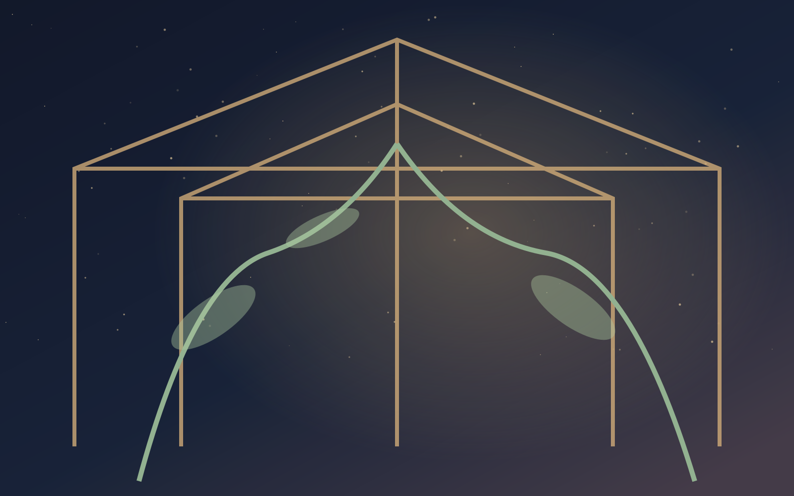

CHAPITRE III - SERRE · HORS DU TEMPS
La serre des instants

Sous une verrière bleutée poussent des plantes impossibles. Chaque feuille enferme un souvenir que quelqu’un n’a pas voulu laisser mourir. Tu reconnais la graine de Mara : elle contient un dernier au revoir. Le jardinier t’explique que la serre peut rester éternellement belle si l’aube ne revient jamais. Mais il existe un chemin de racines jusqu’aux aiguillages.
Faut-il sauvegarder chaque souvenir, ou lui permettre de reprendre sa place dans la vie ?